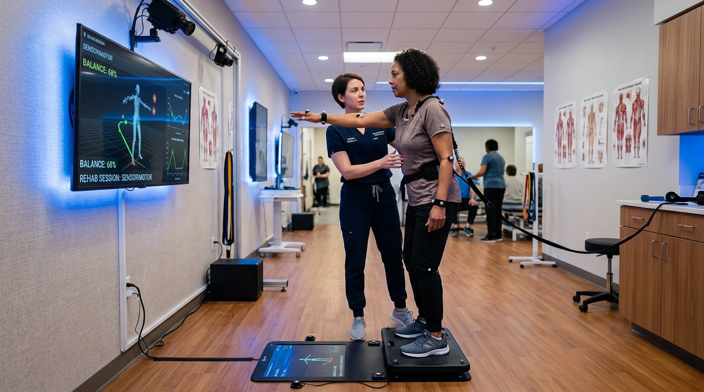

Nach einem Schlaganfall, bei Morbus Parkinson, Multipler Sklerose oder schweren Gleichgewichtsstörungen verliert der Körper nicht seine Muskeln – sondern die Ansteuerung. Wir nutzen Neuroplastizität und hochfrequente Sensomotorik, um neue Synapsen zu bahnen.

Stolpern, Unsicherheit auf unebenem Pflaster oder Angst vor Stürzen entstehen, wenn visuelle, vestibuläre (Innenohr) und propriozeptive Signale nicht mehr sauber zusammenfinden.
Kleinhirn (Cerebellum) zur Feinkoordination der Fußmuskeln + Tractus spinocerebellaris zur blitzschnellen Lagemeldung.
Posturomed-Schwingplatte, sensomotorische Fußbettungen nach Janda und visuell geführtes Balance-Feedback.
Nach Hebbian Learning erholt sich geschädigtes Nervengewebe am schnellsten durch hochfrequente, zielgerichtete und alltagsrelevante Wiederholungen.
Wir wecken schlafende Rezeptoren über Igelbälle, vibrotaktile Reize und Temperaturwechsel, um den sensorischen Kortex überhaupt erst wieder ansprechbar zu machen.
Über dreidimensionale Bewegungsmuster stimulieren wir die Muskelketten in natürlichen Synergien. Das Gehirn lernt Bewegungen – keine einzelnen isolierten Muskeln!
Vom sicheren Aufstehen vom Stuhl über Treppensteigen bis zum Einkaufen ohne Gehhilfe: Jeder Fortschritt wird im echten Alltag verankert.
Abrechnung mit allen gesetzlichen und privaten Krankenkassen über die Positionsnummern KG-ZNS Bobath oder KG-ZNS PNF.
Hemmung von Spastiken, Anbahnung physiologischer Haltungs- und Bewegungsmuster sowie Wiedererlernen von Symmetrie nach Apoplex.
Gezielte großamplitudige Bewegungen zur Überwindung von Bradykinese (Verlangsamung), Freezing-Phänomenen und Kleinschrittigkeit.
Gleichgewichtstraining auf instabilen Unterlagen, Posturomed und sensorischen Matten zur Reaktivierung protektiver Schrittreflexe.
Widerstands- und Dehnungsreize zur Koordination agonistischer und antagonistischer Muskelgruppen bei Ataxien und Paraparesen.
Visuelle Illusion über einen Spiegel zur Reorganisation der kortikalen Repräsentation gelähmter oder schmerzhafter Extremitäten.
Für Patienten mit eingeschränkter Mobilität führen wir alle neuro-physiotherapeutischen Behandlungen direkt im häuslichen Umfeld durch.
Neurologische Rehabilitation erfordert fundiertes Fachwissen, Empathie und den unbedingten Willen, jeden noch so kleinen Meilenstein gemeinsam zu feiern.
Bobath-Instruktor (IBITA) und PNF-Spezialist. Über 18 Jahre Erfahrung in neurologischen Akut- und Frührehazentren Großhadern.
Expertin für Parkinson-Gangtraining, Gleichgewichtsstörungen und vestibuläre Schwindeltherapie.
Spezialisiert auf motorisches Lernen, Gangschulung auf dem Laufband und Hausbesuche bei schwerstbetroffenen Schlaganfallpatienten.
Ebenerdiger Zugang, extrabreite Türen, Deckenlifter für sichere Gehversuche und großzügige Behindertenparkplätze direkt vor dem Eingang.
Für Rezept-Prüfungen (KG ZNS), Hausbesuchsanfragen oder Klinikentlassungen.